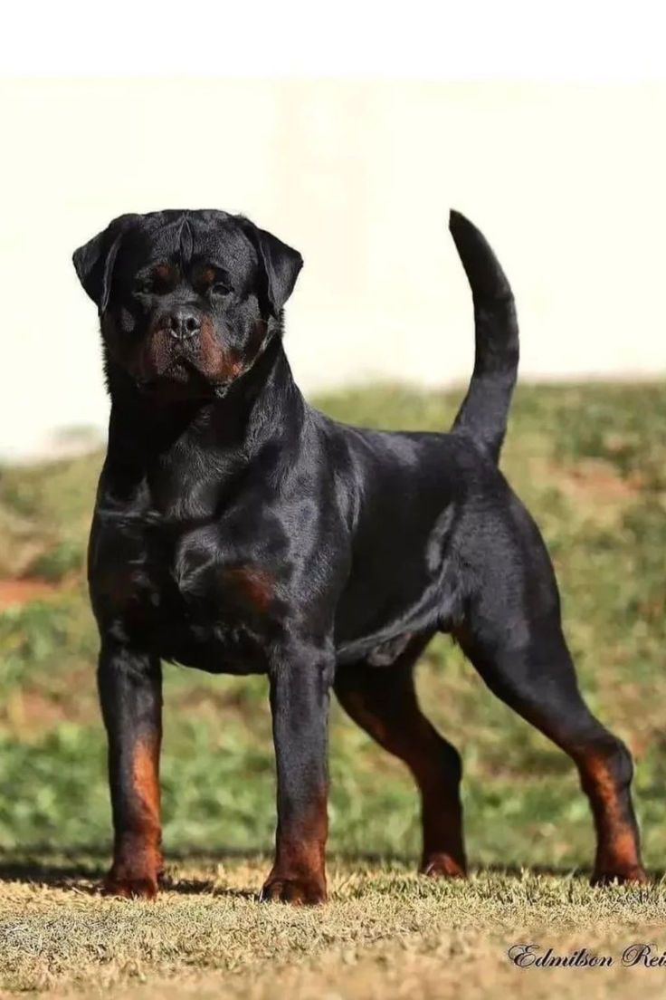

Surgimento dos Rottweiler

O Rottweiler é uma das raças mais antigas, com origens no Império Romano, onde atuava como cão de pastoreio e guarda. Descendentes de molossos, acompanharam as legiões pelos Alpes até a Alemanha, na região de Rottweil, cruzando-se com cães locais e tornando-se cães de açougueiro (Metzgerhund) e tração, reconhecidos pela força e inteligência.